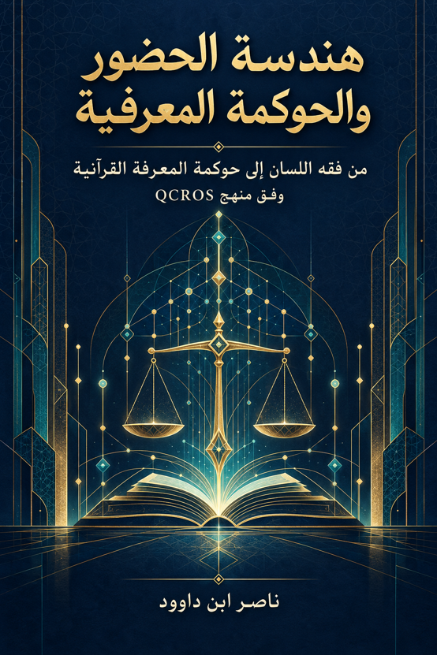

ناصر ابن داوود

نسخة نصية مستخرجة من ملف Word الذي قدمه المؤلف؛ راجع المصدر الأصلي.
جارٍ تجهيز القارئ…
هندسة الحضور والحوكمة المعرفية
المقدمة الكبرى
تمهيد تأسيسي: لماذا نحتاج إلى حوكمة المعرفة؟
ينطلق هذا الكتاب من إدراك أن المشكلة في القراءة القرآنية ليست دائماً في ما نصل إليه، بل في كيف وصلنا، وما رتبة ما وصلنا إليه، وما حدود نسبته إلى المصدر.
فالنص القرآني – في أصله – ثابت ومحفوظ، لكن القراءة البشرية للنص ليست ثابتة؛ فهي تتأثر بالمنهج، والافتراضات المسبقة، والسياق الثقافي، وأدوات التحليل المتاحة. وهذا ليس عيباً في القراءة، بل هو طبيعة الجهد البشري. ولكن المشكلة تظهر عندما تختلط هذه العوامل بعضها ببعض، وعندما تُرفع نتيجة القراءة إلى رتبة النص نفسه، وعندما يُغلق باب مراجعة المسار بحجة أن النتيجة «قرآنية».
ومن هنا يطرح الكتاب سؤالاً مركّباً:
كيف نقرأ النص قراءةً واعيةً بحدودها، قابلةً للفحص والمراجعة، دون أن ننسب إلى النص ما لم يثبت، ودون أن نُغلق الباب أمام اكتشافات جديدة؟
وهذا السؤال هو جوهر حوكمة المعرفة القرآنية.
أولاً: إشكالية القراءة التأويلية – بين إسقاط الفرضيات وثبات النص
"ب"
من أقدم الإشكاليات التي واجهت القراءة التأويلية للقرآن هي إسقاط الفرضيات المسبقة على النص.
قد يدخل الباحث إلى النص وهو يحمل فكرة أو نموذجاً معيناً، ثم يبدأ في البحث عن آيات تؤيده، ويترك ما يخالفه، أو يؤوّله بما يتوافق مع فرضيته. وهنا يصبح النص مجرد شاهد على فرضية سابقة، بدلاً من أن يكون مصدراً يفرض نفسه على القارئ.
والأخطر من ذلك أن هذا الإسقاط قد يحدث دون وعي من الباحث؛ فيظن أنه يقرأ النص بموضوعية، بينما هو في الحقيقة يقرأ النص من خلال عدسة نموذجه.
ولهذا لا تكفي النية الصادقة وحدها لضمان سلامة القراءة؛ بل تحتاج إلى جهاز رقابي يراقب حركة الفرضية داخل البحث.
المبدأ الأول:
لا يُنسب إلى النص ما لم يثبت من خلال مسار استدلالي واضح، يُظهر كل خطوة من خطواته، ويُعلن كل تحويلة في مساره.
ثانياً: أزمة الخلط بين المستويات المعرفية
"ن/ب"
من أعقد المشكلات المنهجية أن تختلط المستويات المعرفية بعضها ببعض، فيصبح من الصعب التمييز بين:
النص: ما ورد في القرآن لفظاً.
البيان: شرح النص وتوضيح دلالته.
الاستقراء: جمع الشواهد واستخلاص النمط المتكرر.
الاستنباط: النتيجة العقلية المستخلصة من المقدمات.
النموذج الوظيفي: البناء التفسيري المقترح لفهم كيفية اشتغال المفهوم.
الفرضية: الاقتراح الذي لم يصل بعد إلى درجة الإثبات الكافية.
وهذه المستويات ليست متساوية في الرتبة، وليس كل واحد منها يصلح لأن يُعامل معاملة الآخر.
فالاستنباط ليس نصاً، والنموذج ليس بياناً، والفرضية ليست استقراءً.
وعندما يختلط الأمر، قد يحدث أن:
يُرفع الاستنباط إلى مرتبة النص.
ويُعامل النموذج كأنه حقيقة قرآنية.
وتُقدّم الفرضية بوصفها نتيجة نهائية.
وهذا الخلط يفسد سلامة المعرفة، ويجعل النموذج البشري محمياً من المراجعة؛ لأنه يُنسب إلى النص نفسه.
المبدأ الثاني:
كل ادعاء معرفي يجب أن يُوسم برتبته، وأن تُعلن الحدود التي تفصل بينه وبين المستويات الأخرى.
ثالثاً: من «منهج القراءة» إلى «علم مراقبة القراءة»
"س"
إذا كان «منهج القراءة» هو مجموعة الأدوات التي نستخدمها لفهم النص، فإن «مراقبة القراءة» هي مجموعة الأدوات التي نستخدمها لفحص الطريقة التي نقرأ بها النص.
فمنهج القراءة يهتم بـ:
كيف نحدد دلالة اللفظ؟
كيف نفهم السياق؟